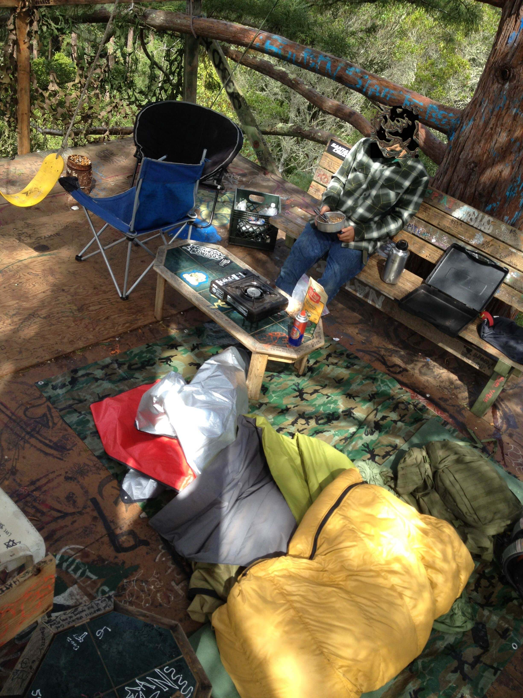

This blog was coded by myself during Quarantine 2020. In this blog I detail some of my ideas, projects, and other things that are going on in my life. Entries are 300 words or less.
Special thanks to Kristian Windsor for teaching me how to code.
It was so high up that you’d have to snap your head as far back as it could go just to gaze up at the treehouse.
I don’t remember we heard about it, it was probably from a post on social media. With rough directions, we went to find it. We marched through the afternoon with more gear than we could possibly need.
The base of the tree was hidden past twenty minutes of steep trails.
It looked impossible. There was no way we could climb something this tall – definitely not with our bags on. You had to squint to even seen the treehouse itself.
I tried first. It was a strenuous climb on branches that were beginning to wear down. It felt like an eternity getting up there. Branch by branch, I hoisted myself up. At the top, a trapdoor was the final step before the safety and reassurance of the plywood platform.
On it, there was a bench, coffee table, and other janky pieces. A swing swung right over the entire 80 foot drop. Every inch of the place was marked with doodles and quotes.
I made use of a pulley and yanked our bags up.
F took ages to climb and asked me to chat with him the whole time to distract himself from the unnerving height.
We made a massive spread of food for dinner. The moon slipped through the few branches above us as we slept. In the morning, we had oatmeal.
Only a few months later, police tore down the treehouse after some drunk kids fell from the thing.
There’s lots of places like this in Santa Cruz. Abandoned or secret places where we can escape to. When we find them, we always make sure not to geotag them.
A few remain hidden...